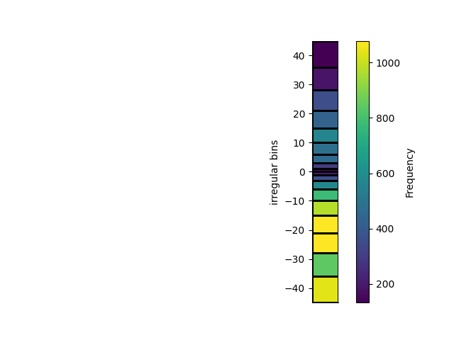
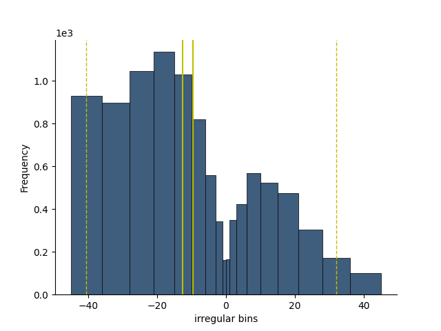

Note
Click here to download the full example code
Histogram 1D
This histogram class allows efficient updating of histograms, plotting and saving as HDF5
from geobipy.src.classes.mesh.RectilinearMesh1D import RectilinearMesh1D
import h5py
from geobipy import StatArray
from geobipy import Histogram
import numpy as np
import matplotlib.pyplot as plt
Histogram with regular bins
# Create regularly spaced bins
mesh = RectilinearMesh1D(edges=StatArray(np.linspace(-3.0, 3.0, 101), 'bins', 'm'))
Set the histogram using the bins, and update
H = Histogram(mesh=mesh)
We can update the histogram with some new values
H.update(np.random.randn(1000), trim=True)
# Plot the histogram
plt.figure()
plt.subplot(221)
_ = H.plot()
plt.subplot(222)
_ = H.pdf.bar()
plt.subplot(223)
H.pmf.bar()
plt.subplot(224)
H.cdf().bar()
<AxesSubplot: xlabel='bins (m)', ylabel='Cumulative Density Function'>
Get the median, and 95% confidence values
print(H.credible_intervals(percent=95.0))
plt.figure()
H.plot()
H.plotCredibleIntervals()
H.plotMean()
H.plotMedian()
(0.09000000000000008, -1.95, 1.71)
Histogram with irregular bins
# Create irregularly spaced bins
x = np.cumsum(np.arange(10, dtype=np.float64))
irregularBins = np.hstack([-x[::-1], x[1:]])
Create a named StatArray
edges = StatArray(irregularBins, 'irregular bins')
mesh = RectilinearMesh1D(edges = edges)
Instantiate the histogram with bin edges
H = Histogram(mesh=mesh)
Update the histogram
H.update((np.random.randn(10000)*20.0) - 10.0)
Plot the histogram
plt.figure()
plt.subplot(211)
_ = H.plot()
plt.subplot(212)
_ = H.plot(normalize=True)
plt.figure()
H.plot()
H.plotCredibleIntervals()
H.plotMean()
H.plotMedian()
- 
- 
We can plot the histogram as a pcolor plot
plt.figure()
_ = H.pcolor(grid=True, transpose=True)
Histogram with linear space entries that are logged internally
Create some bins spaced logarithmically
mesh = RectilinearMesh1D(edges = StatArray(np.logspace(-5, 3), 'positive bins'), log=10)
Instantiate the Histogram with log=10
H = Histogram(mesh)
The update takes in the numbers in linear space and takes their log=10
H.update(10.0**(np.random.randn(1000)*2.0), trim=True)
plt.figure()
plt.subplot(211)
_ = H.plot()
import h5py
with h5py.File('h1d.h5', 'w') as f:
H.toHdf(f, 'h1d')
with h5py.File('h1d.h5', 'r') as f:
H1 = Histogram.fromHdf(f['h1d'])
plt.subplot(212)
_ = H1.plot()
mesh = RectilinearMesh1D(edges=StatArray(np.linspace(-3.0, 3.0, 101), 'bins', 'm'))
Set the histogram using the bins, and update
H = Histogram(mesh=mesh)
We can update the histogram with some new values
H.update(np.random.randn(1000), trim=True)
import h5py
with h5py.File('h1d.h5', 'w') as f:
H.createHdf(f, 'h1d', add_axis=StatArray(np.arange(3.0), "Name", "Units"))
H.writeHdf(f, 'h1d', index=0)
H.update(np.random.randn(1000), trim=True)
H.writeHdf(f, 'h1d', index=1)
H.update(np.random.randn(1000), trim=True)
H.writeHdf(f, 'h1d', index=2)
with h5py.File('h1d.h5', 'r') as f:
H1 = Histogram.fromHdf(f['h1d'])
H2 = Histogram.fromHdf(f['h1d'], index=0)
H3 = Histogram.fromHdf(f['h1d'], index=1)
H4 = Histogram.fromHdf(f['h1d'], index=2)
print(H4.summary)
# plt.figure()
# plt.subplot(211)
# _ = H1.plot()
# plt.subplot(212)
# _ = H4.plot()
plt.show()
Histogram:
mesh:
| RectilinearMesh1D
| Number of Cells:
| | 100
| Cell Centres:
| | Name: bins (m) 0x7ff592df8940
| | Shape: (100,)
| | Values: [-2.97 -2.91 -2.85 ... 2.85 2.91 2.97]
| | min: -2.9699999999999998
| | max: 2.9699999999999998
| Cell Edges:
| | Name: bins (m) 0x7ff592df8dc0
| | Shape: (101,)
| | Values: [-3. -2.94 -2.88 ... 2.88 2.94 3. ]
| | min: -3.0
| | max: 3.0
| log:
| | None
| relativeTo:
| | Name: 0x7ff592dad0c0
| | Shape: (1,)
| | Values: [0.]
| | min: 0.0
| | max: 0.0
|values:
| Name: Frequency 0x7ff592df8b40
| Shape: (100,)
| Values: [1 0 1 ... 1 1 0]
| min: 0
| max: 82
Total running time of the script: ( 0 minutes 1.342 seconds)